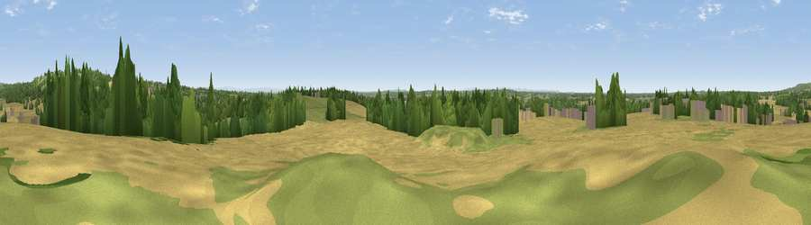

Viewpoint near Moss Bank
#17704 in England · top 46% of its area beats it · near Moss BankThe view, rendered

A 360° render of this exact spot computed from the terrain model, tree cover and land cover — summer colours, afternoon light, calibrated against photographs of famous viewpoints. Real trees, hedges and buildings will differ in detail.
The panorama
Grey silhouette: terrain skyline in each direction (720 bearings, Earth curvature and refraction included). Dashed green: skyline with trees (+15 m) and buildings (+8 m) as obstacles. Blue strip: how far the ground is visible on each bearing.
Where the view opens
Wedge length = distance to the farthest visible ground on that bearing (vegetation-aware). Rings at 10, 25 and 50 km.
What fills the view
54% cropland · 21% grassland · 20% woodland · 6% built-up
Angular shares of the visible panorama (visual magnitude), not map area. Landscape diversity 0.50 (0–1 Shannon).
Key numbers
More beautiful places nearby
The staircase of upgrades: each row has a higher view potential than everything closer. Driving times are estimates from straight-line distance, calibrated against real road routing — check an actual route before setting out.
| Place | Direction | Drive | Score |
|---|---|---|---|
| Billinge Hill | NE · 3 km | ~7 min | 73.8 |
| Viewpoint near Dalton | N · 9 km | ~17 min | 74.2 |
| Rivington Pike | NE · 20 km | ~33 min | 81.9 |
| White Brow | NE · 20 km | ~34 min | 82.9 |
| Warton Crag | N · 73 km | ~97 min | 83.2 |
| Viewpoint near Grange-over-Sands | N · 80 km | ~104 min | 83.4 |
| Viewpoint near Cartmel | NNW · 81 km | ~105 min | 87.0 |
| Viewpoint near Cartmel | NNW · 82 km | ~106 min | 87.2 |
53.48923, -2.74185 · source: screening · position refined by local search. Computed location — check access rights before visiting.